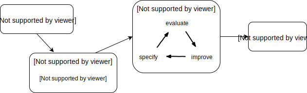
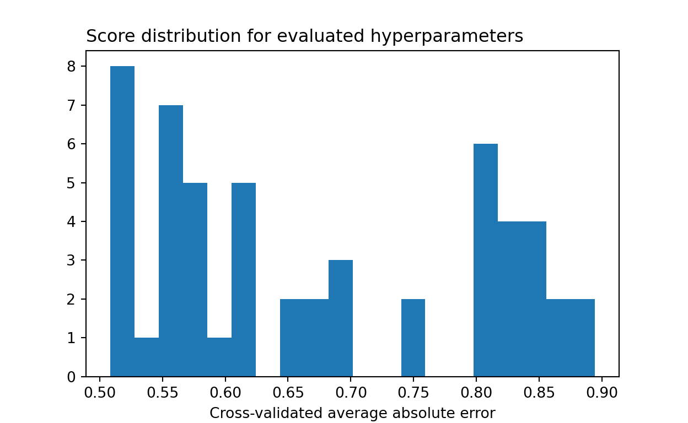
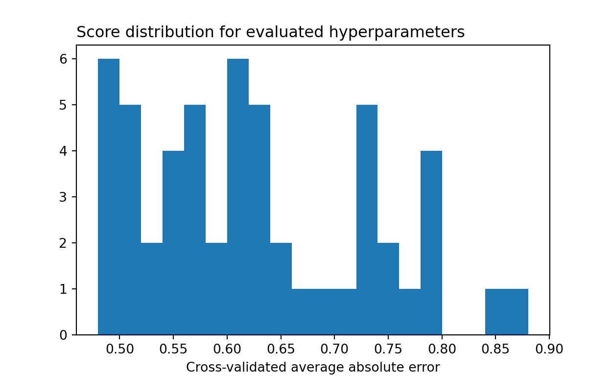
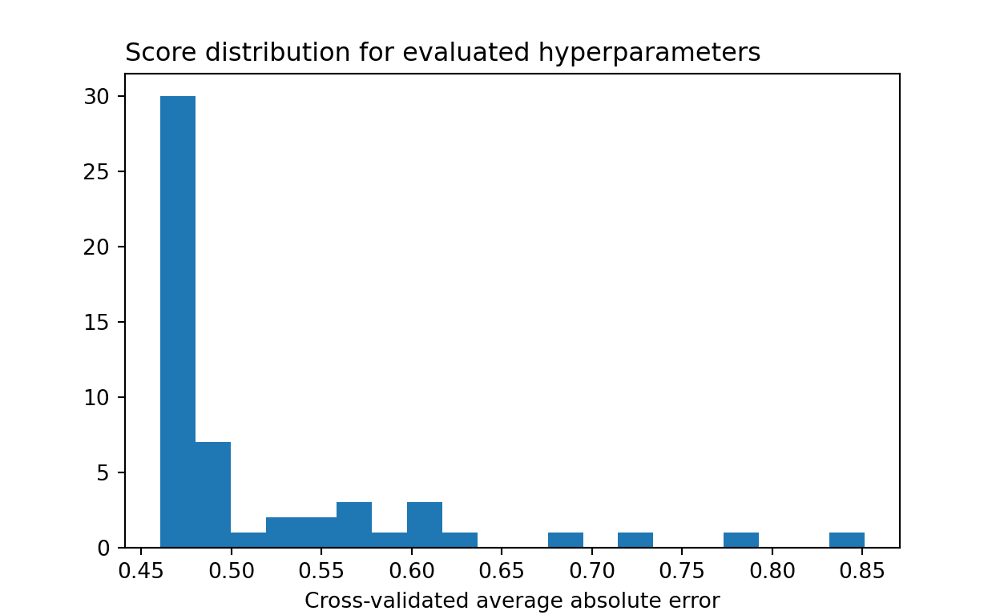
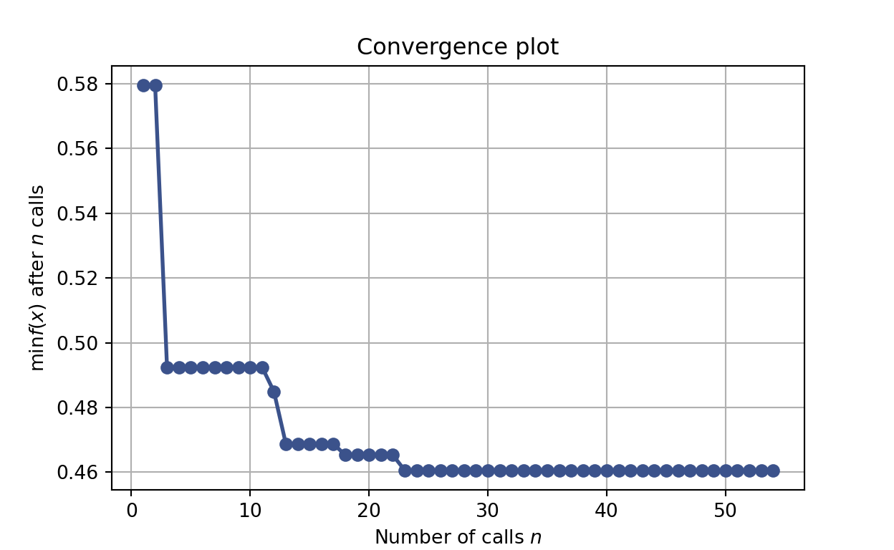

1 Introduction
Machine learning is easy, right? You pick a model, fit it to your data, and out come predictions.

That’s how machine learning is taught at colleges. That’s how it’s sold to businesses as well. Sometimes we talk about the fancy math and algorithms under the hood to make it look serious, but we rarely talk about how difficult it is to transform whatever data can gather into useful, actionable predictions that have business value.
There are many challenges. First, there’s the transformation of a business problem into something that’s remotely approachable by machine learning and statistics. Second, there’s the development of a data collection plan or, more often than not, the identification of observational data which is already available. With the collection of this data comes the third step, modeling, which bridges between numbers and useful answers. Modeling may have to account for all kinds of issue with your data, such as class imbalance, missingness, and non-representativeness. You also want to obtain good answers, so throughout this step you loop between model specification, evaluation, and refinement. It is a lengthy process of research and investigation into the performance of your model, insights into the why of what you observe, and various fixes and improvements to your model. Finally, in a fourth stage, you must account for how your model will be used and the management of its lifecycle.

Moral of the story: there is a lot work involved. We need all hands on deck. And even more than that, we need robust automatization tools to support this machine learning workflow.
This blog post is about a single set of tools – hyperparameter optimization techniques – used to help with the model specification, evaluation, and refinement loop. I will focus on the standard machine learning framework of supervised learning. In this context, machine learning algorithms can be seen as black boxes which take in some data, a bunch of tuning hyperparameters specified by the user of the algorithm, and which output predictions. The quality of the predictions can be evaluated through data splitting or cross-validation. That is, we’re always able to compare predictions to ground truth for the data we have at hand.
My goal is to describe key approaches to hyperparameter optimization (see Table 1) in order to provide conceptual understanding that can be helpful practice. I describe black-box methods which treat the machine learning algorithm as, well, a black blox. This includes grid search, randomized search, and sequential model-based optimization such as Bayesian optimization. There are additional methods to be considered, such as Hyperband and Bayesian model selection, which integrate with the learning algorithms themselves. These will be for another blog post.
| Black-box methods | Integrated methods |
|---|---|
| Grid Search | Hyperband |
| Randomized Search | Bayesian Model Selection |
| Sequential Model-Based Optimization |
Before getting into the detail of these methods though, let’s go over some basic concepts and terminology which I’ll be using.
1.1 Background and Terminology
First, let’s talk about models, parameters and performance evaluation. This is going to be the occasion for me to introduce some terminology and notations.
Models, Parameters and Performance Evaluation
A model is a mathematical representation of something going on in the real world. For instance, suppose you want to predict whether or not a given stock \(X\) is going to go up tomorrow. A model for this could be: predict it’s going to go up with probability \(\alpha\) if it went up today, otherwise predict it’s not going to go up with probability \(\beta\). There’s only one variable in this model (whether or not the stock went up today), and there are two parameters, the probabilities \(\alpha\) and \(\beta\). Here the parameters could be learned if we had historical data.
You could consider more sophisticated models such as classical time series models or reccurent neural networks. In all cases, you have variables (the input to your model), parameters (what you learn from data), and you end up with predictions.
You can compare the performance of any model by comparing the predictions to what actually happened. For instance, you could look at how often your predictions were right. That’s a performance evaluation metric. Your goal is usually to build a model which will keep on performing well.
Formally, let \(R\) be the (average) future performance of your model. You don’t know this quantity, but you can estimate it as \(\hat R\) using techniques such as cross-validation and its variants. There might be a bias and a variance to \(\hat R\), but the best we can do in practice is to try to find the model with the best estimated performance (modulo certain adjustments).
This brings us to the question: how should you choose a model? The standard in machine learning is to choose a model which maximizes \(\hat R\). It’s not the only solution, and it’s not always the best solution (it can be better to do model averaging if \(\hat R\) has some variance), but it’s what we’ll focus on through this blog post.
Furthermore, we’ll approach this problem through the lens of hyperparameter selection.
Hyperparameters
Hyperparameters are things that have you have to specify before you can run a model, such as:
- what data features to use,
- what type of model to use (linear model? random forest? neural network?)
- other decisions that go into the specification of a model:
- the number of layers in your neural network,
- the learning rate for the gradient descent algorithm,
- the maximum depth for decision trees, etc.
There is only a practical distinction between parameters and hyperparameters. Hyperparameters are things that are usually set separately from the other model parameters, or that do not nicely fit within a model’s learning algorithm. Depending on the framework you’re using, parameters can become hyperparameters and vice versa. For example, by using ensemble methods, you could easily transform the “model type choice” hyperparameter to a simple parameter of your ensemble that is learned from data.
The key thing is that, in practice, there will typically be some distinction between parameters of your model and a set of hyperparameters that you have to specify.
Through experience, you can learn what hyperparameters work well for the kinds of problems that you work on. Other times, you might carefully tune parameters and investigate the impact of your choices on model performance.
The manual process of hyperparameter tuning can lead to important insights into the performance and behavior of your model. However, it can also be a menial task that would be better automated through hyperparameter optimization algorithms aiming to maximize \(\hat R\), such as those that I review below.
Example
Let’s look at an example to make things concrete. This is adapted from scikit-optimize’s tutorial for tuning scikit-learn estimators.
We’ll consider the California housing dataset from the scikit-learn library. Each row in this dataset represents a census block and contains aggregated information regarding houses in that block. Our goal will be to predict median house price at the block level given these other covariates.
import pandas as pd
import numpy as np
from sklearn.datasets import fetch_california_housing
dataset = fetch_california_housing(as_frame=True)
X = dataset.data # Covariates
n_features = X.shape[1] # Number of features
y = dataset.target # Median house prices
X MedInc HouseAge AveRooms ... AveOccup Latitude Longitude
0 8.3252 41.0 6.984127 ... 2.555556 37.88 -122.23
1 8.3014 21.0 6.238137 ... 2.109842 37.86 -122.22
2 7.2574 52.0 8.288136 ... 2.802260 37.85 -122.24
3 5.6431 52.0 5.817352 ... 2.547945 37.85 -122.25
4 3.8462 52.0 6.281853 ... 2.181467 37.85 -122.25
... ... ... ... ... ... ... ...
20635 1.5603 25.0 5.045455 ... 2.560606 39.48 -121.09
20636 2.5568 18.0 6.114035 ... 3.122807 39.49 -121.21
20637 1.7000 17.0 5.205543 ... 2.325635 39.43 -121.22
20638 1.8672 18.0 5.329513 ... 2.123209 39.43 -121.32
20639 2.3886 16.0 5.254717 ... 2.616981 39.37 -121.24
[20640 rows x 8 columns]For the regression, we’ll use scikit-learn’s gradient boosted trees estimator. This model has a number of internal parameters which don’t need to know much about, as well as hyperparameters which can be used to tune the model. This includes the max_depth hyperparameter for the maximum depth of decision trees, learning_rate for the learning rate of gradient boosting, max_features for the maximum number of features to use in each decision trees, and a few more. Ranges of reasonable values for these parameters are specified in the space variable below.
from sklearn.ensemble import GradientBoostingRegressor
from skopt.space import Real, Integer
model = GradientBoostingRegressor(n_estimators=25, random_state=0)
space = [Integer(1, 8, name='max_depth'),
Real(0.01, 1, "log-uniform", name='learning_rate'),
Integer(1, n_features, name='max_features'),
Integer(1, 50, name='min_samples_leaf')
]Now, the last thing we need is an estimator \(\hat R\) for the model’s performance. This is our Rhat() function (i.e. \(\hat R\)) which we’ll try to maximize. Here we use a cross-validated mean absolute error score.
from sklearn.model_selection import cross_val_score
def Rhat(**params):
model.set_params(**params)
return -np.mean(cross_val_score(model, X, y, cv=3, n_jobs=-1,
scoring="neg_mean_absolute_error"))With this, we can fit the model to the data (using default hyperparameter values to begin with), and evaluate the model’s performance.
model.fit(X, y)GradientBoostingRegressor(n_estimators=25, random_state=0)Rhat()0.5503720160635011Here the unit for median house price was in hundreds of thousands of dollars and we can interpret the model performance at this scale. The value \(\hat R \approx 0.55\) means that, on average, the absolute error of the model is $55,000. We’ll see if we can do better using hyperparameter optimization.
2 Black-Box Optimization Methods
Black-box hyperparameter optimization algorithms consider the underlying machine algorithm as unknown. We only assume that, given a set of hyperparameters \(\lambda\), we can compute the estimated model performance \(\hat R(\lambda)\). There is usually variance in \(\hat R(\lambda)\), but this is not something that I will talk about in this post. We will therefore consider \(\hat R\) as a deterministic function to be optimized.
Note: in practice, you need to account for the variance in \(\hat R\), as otherwise you could get bad surprises. It’s just not something I’m covering in this post, since I want to focus on a conceptual understanding of the optimization algorithms.
We can use almost any technique to try to optimize \(\hat R\), but there are a number of challenges with hyperparameter optimization:
- \(\hat R\) is usually rather costly to evaluate.
- We usually do not have gradient information regarding \(\hat R\) (otherwise, hyperparameters for which we have gradient information could easily be incorporated as parameters of the underlying ML algorithms).
- The hyperparameter space is usually complex. It can contain discrete variables and can even be tree-structured, where some hyperparameters are only defined conditionally on other hyperparameters.
- The hyperparameter space is usually somewhat high-dimensional, with more than just 2-3 dimensions.
These particularities of the hyperparameter optimization problem has led the machine learning community to favor some of the optimization techniques which I discuss below.
2.1 Grid Search
The first technique to consider is grid search, which is a brute force approach to hyperparameter optimization. It is the simplest of all – you simply specify values to consider for each hyperparameter, and then evaluate your model performance for each combination of hyperparameter. At the end, you keep the hyperparameter configuration which performed best.
There are a few advantages to this approach:
- It gives you precise control over what hyperparameter configurations are evaluated.
- It is simple to implement and easily parallelizable.
However, there are also a number of serious drawbacks:
- The runtime scales exponentially in the number of hyperparameter dimensions.
- The runtime is tied to the hyperparameter search space which you specify. To reduce runtime, you need to manually redefine this space.
Let’s see an example of how this works in practice. First, we define a grid of hyperparameter values to evaluate. Given the scoring function \(\hat R\), we can then use scikit-learn’s GridSearchCV() function to evaluate the model performance at each hyperparameter combination. This is done below:
from sklearn.model_selection import GridSearchCV
# Budget of 54 evaluations
grid = {
'max_depth': [1, 3, 5],
'learning_rate': [0.01, 0.1, 1],
'max_features': [2, 4, 8],
'min_samples_leaf': [1, 10]
}
def scoring(estimator, X_test, y_test):
y_pred = estimator.predict(X_test)
return -np.mean(np.abs(y_test - y_pred))
results = GridSearchCV(model, grid, cv=3, n_jobs=-1, scoring=scoring).fit(X, y)We can then recover the best score and best hyperparameters. The best model is slightly better than the default model we looked at earlier, with a $4,000 decrease in average absolute error.
-results.best_score_ # Lowest cross-validated mean absolute error0.5084134111524956{key:results.best_params_[key] for key in grid.keys()} # Best parameters{'max_depth': 5, 'learning_rate': 0.1, 'max_features': 8, 'min_samples_leaf': 1}It is also informative to plot an histogram for the distribution of model scores. We can see that most model configurations performed much worst than the default.
import matplotlib.pyplot as plt
plt.clf()
p = plt.hist(-results.cv_results_["mean_test_score"], bins=20)
p = plt.title("Score distribution for evaluated hyperparameters", loc="left")
p = plt.xlabel("Cross-validated average absolute error")
plt.show()
2.2 Random Search
The second method we’ll look at is random search. Here, the idea is to sample a number \(k\) of hyperparameter configurations at random from a given space, and to evaluate those random configurations.
This might seem like a silly idea. Why pick hyperparameter values at random?
The answer is that doing so removes all computational penalties from the consideration of useless hyperparameter dimensions. That is, imagine that a number \(s\) of your hyperparameters have actually no impact on model performance. With grid search, the consideration of these hyperparameters would incur you a computational penalty which is exponential in \(s\). With random search, however, there is no penalty at all for adding these \(s\) additional hyperparameter dimensions. The results from random search with or without these additional dimensions are exactly the same in both cases.
This is the huge advantage of random search over grid search: you do not get penalized for useless dimensions. Furthermore, in practice, being able to tune the search effort through the number of samples \(k\) can be quite convenient.
Let’s see how this can be implemented in practice. We’ll define a hyperparameter space which is similar to the grid space we specified earlier, but which is filled in with additional possible values. We can then run scikit-learn’s RandomizedSearchCV() function to do the randomized search:
from sklearn.model_selection import RandomizedSearchCV
from scipy.stats import loguniform
# Around roughly the same values as for the grid search
param_distribution = {
'max_depth': range(1, 8),
'learning_rate': loguniform(0.01, 1),
'max_features': range(1, 9),
'min_samples_leaf': range(1, 50)
}
# Budget of 54 evaluations
results = RandomizedSearchCV(model, param_distribution, n_iter=54, cv=3, n_jobs=-1, scoring=scoring, random_state=0).fit(X, y)The results are below. By considering a richer hyperparameter space, and without being penalized by this in the same way we would with a grid search, randomized search allows us to find a better model with the same amount of effort.
-results.best_score_ # Lowest cross-validated mean absolute error0.4797334598181764{key:results.best_params_[key] for key in grid.keys()} # Best parameters{'max_depth': 6, 'learning_rate': 0.14539375242431551, 'max_features': 7, 'min_samples_leaf': 26}Again, we can look at the distribution of model performance for sampled hyperparameter configurations. It’s quite similar to grid search, with only a few better-performing models being identified.
import matplotlib.pyplot as plt
plt.clf()
p = plt.hist(-results.cv_results_["mean_test_score"], bins=20)
p = plt.title("Score distribution for evaluated hyperparameters", loc="left")
p = plt.xlabel("Cross-validated average absolute error")
plt.show()
2.3 Sequential Model-Based Optimization
All of the techniques considered so far made no assumption at all about the function \(\hat R\) to optimize.
This is a problem, because we do have prior information about \(\hat R\). We can expect \(\hat R\) to have some level of regularity, meaning that similar hyperparameter configurations should have similar performance. This knowledge allows us to make inference about \(\hat R(\lambda)\) given the evaluation of \(\hat R\) at other points \(\tilde \lambda \not = \lambda\).
More formally, suppose we have evaluated \(\hat R\) at a sequence of hyperparameter configurations \(\lambda_1, \lambda_2, \dots, \lambda_n\), thus observing \(\hat R(\lambda_1), \hat R(\lambda_2), \dots, \hat R(\lambda_n)\). This allows us to make inference about \(\hat R\). In particular, we can try guessing what next \(\lambda_{n+1}\) will maximize \(\hat R\) or improve our knowledge of \(\hat R\). Once we’ve observed \(\hat R(\lambda_{n+1})\), we repeat the process, trying to guess which \(\lambda_{n+2}\) to pick to improve the procedure. That is the entire idea behind sequential model-based optimization.
To make this work in practice, we need the following ingredients:
- An inferential model for \(\hat R\). That could be a Bayesian nonparametric model, like a Gaussian Process, or something else, like a Tree-structure Parzen Estimator.
- A method to guess the next best hyperparameter value to pick. Typically, \(\lambda_{n+1}\) is chosen to maximize the expected improvement criterion. This chooses \(\lambda\) to maximize the expected value of \(\max\{\hat R(\lambda) - R^*, 0\}\), where \(R^*\) is the current observed performance maximum. In other words, we want to maximize the potential for improving the current optimum, without penalizing for the possibility of observing a lower performance. This allows us to optimize \(\hat R\) while still exploring the hyperparameter space. I refer the reader to here for a review of a few other selection criterions.
When a Bayesian inferential framework is chosen, then sequential model-based optimization is called Bayesian optimization or Bayesian search. It is beyond of the scope of this blog post to go into the details of gaussian processes, but below I show howthe scikit-optimize library can be used to perform Bayesian optimization based on Gaussian Processes and the expected improvement criterion:
from skopt import gp_minimize
from skopt.utils import use_named_args
@use_named_args(space)
def objective(**params):
model.set_params(**params)
return -np.mean(cross_val_score(model, X, y, cv=3, n_jobs=-1,
scoring="neg_mean_absolute_error"))
res_gp = gp_minimize(objective, space, n_calls=54, random_state=1)
## 0.46With Bayesian optimization, we see that much more time is spent sampling performant models.
plt.clf()
p = plt.hist(res_gp.func_vals, bins=20)
p = plt.title("Score distribution for evaluated hyperparameters", loc="left")
p = plt.xlabel("Cross-validated average absolute error")
plt.show()
Furthermore, we can see that the algorithm quickly converges towards performant models.
from skopt.plots import plot_convergence
plot_convergence(res_gp)
3 Discussion
Hopefully, this blog post provided a basic overview of hyperparameter optimization and of what can be gained from these techniques. We reviewed grid search, the simplest brute force approach. We reviewed random search, which improves upon grid search when some hyperparameter dimensions are not influencial. Finally, we reviewed sequential model-based optimization, which much more effectively samples models with good performance.